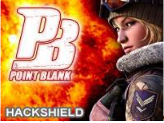

PointBlank adalah game RPG yang sering dimainkan oleh anak-anak zaman sekarang. Vendor game ini adalah Pt.Gemscool. Game ini mulai popular sekitar tahun 2004-2005. Game ini dibagi menjadi 2 team yaitu Counter Terorist dan Terorist. Terdapat sekitar 500server yang disediakan oleh Gemscool. Yaitu server Newbie sekitar 30 server, Expert sekitar 30 server dan sisanya adalah server Publik. Terdapat beberapa mode permainan yaitu Deathmatch, Bomb Mision, ShotGun Match, dan yang terakhir mode Dinosaurus. Pt.Gemscool hanya menyediakan beberapa senjata yang permanent, dan sisanya harus dibeli dengan Point maupun G-Cash. G-Cash adalah media pembayaran Online untuk membeli sebuah senjata yang berdurasi. Harganya bermacam-macam mulai dari Rp. 10.000 sampai dengan ada yang sampai Rp. 1.000.000
Nb: Jika anda ingin memainkan game tersebut anda harus melakukan pendaftaran di Portal Game Gemscool dan pendaftarannya gratis tidak di pungut biaya apapun.
Kebudayaan Indonesia yang multikultur seperti itu, ketika dikaji dari sisi dimensi waktu, dapat dibagi pula pengertiannya :
Adapun Pengaruh Positif dapat berupa :
| DATA | No. reg | Keymap | Transaction | Account | Sum | |
| total | ||||||
|---|---|---|---|---|---|---|